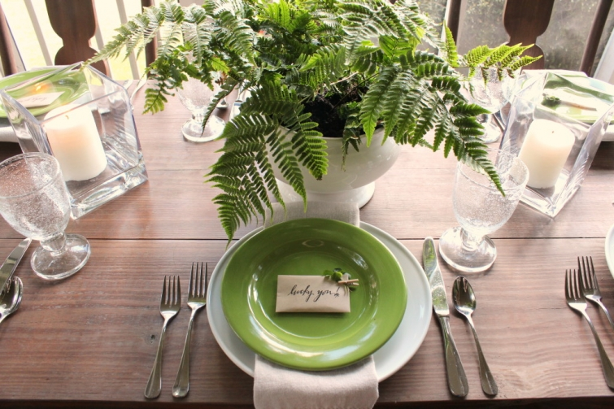

.png)
.PNG)
.PNG)
.PNG)
.PNG)
.PNG)
.JPG)
.JPG)
.PNG)
.PNG)


Happy St. Patrick’s Day to you! ¬†I hope you are wearing pinch-proof green today. üôÇ Did you know that blue was originally the color associated with St. Patrick’s Day – not green?? ¬†Somewhere around the 17th century, people began wearing shamrocks and green ribbons in celebration of the holiday, and that was the start of green’s popularity as the color for St. Patrick’s Day.
The porch is certainly wearing its green today!  It even has a few lucky green shamrocks clipped onto some small envelopes I found at Paper Source.  Inside each envelope is a dark chocolate mint. Yum!
You might notice that my shamrocks have 3 leaves Рnot 4.  That is the way it naturally grows, and even St. Patrick himself used the 3-leaves to explain the Holy Trinity in his teaching of Christianity to the people of Ireland. (Or at least that is how the legend goes.)
 Of course there’s no such thing as Shamrock Juice, but I thought it would be a good name for green kool-aid. üôÇ ¬†Did you know that part of the Chicago River is dyed green each year for a celebration of St. Patrick’s Day?
Of course there’s no such thing as Shamrock Juice, but I thought it would be a good name for green kool-aid. üôÇ ¬†Did you know that part of the Chicago River is dyed green each year for a celebration of St. Patrick’s Day?
They have been doing this since 1962.  Do you suppose they use green kool-aid in the river? (I bet EPD would really love that! LOL)  Here is a time-lapse video showing the process:
And ferns have nothing to do with St. Patrick’s Day, but I liked their color. ¬†Our weather has been so warm lately, I thought they would be good out there on the porch (until they are completely dusted with our current snow of yellow pollen. üôÅ )
Here is an Irish blessing for you today. üôÇ
And here is more information for you on the life of the real St. Patrick – just in case you need a refresher course so that you can impress your friends today. üôÇ ¬†He was born around the year 395 A.D. in Kilpatrick, Scotland (yes, Scotland!) ¬†He was kidnapped and sent to Ireland as a slave to tend sheep there in the mountains when he was 16 years old.
Dreams played a significant role in his life.  He dreamed God told him there would be a ship that would take him to Great Britain if he would run away to the coast.  He followed that dream and was able to escape from his captors.
When he was in Great Britain, he had a dream that the people of Ireland were begging him to come back to them.  That led him to begin studying to be a priest in the Catholic Church.  In 433, he did return to Ireland and worked for almost 30 years in the priesthood to convert the Irish to Christianity.
He died on March 17, 461 in Ireland. ¬†See where we got our St. Patrick’s Day date from? ¬†The strange thing is, he was not made the patron saint of Ireland until hundreds of years later. ¬†I guess it was all those myths about snakes (not true ones) that got the attention of the church. ¬†St. Patrick’s Day became an official “feast day” for the Catholic church in the 17th century.
It was just a small religious holiday in Ireland up until the 1970’s there. ¬†The United States is where all the secular celebration of Irish culture began. ¬†New York City’s first St. Patrick’s Day parade was in 1762. ¬†I believe NYC and Boston have the largest celebrations in our country today (although the one in Savannah, Georgia seems pretty big to me!)
And finally, you know how everyone seems to associate leprechauns with St. Patrick’s Day, right? ¬†Well you won’t believe where that all started.
Disney!
Yes, in 1959 Disney made a movie, Darby O’Gill and the Little People. ¬†(You can see a few scenes from the old movie here.) ¬†It starred Sean Connery and was about some Irish characters and leprechauns. Somehow this American movie so popularized leprechauns that they became linked to St. Patrick’s Day celebrations. ¬†Crazy!
And that brings us to the end of our St. Patrick’s Day history lesson. I hope you are having a fun filled day – whether you are of Irish descent or not. ¬†Now I think I will go enjoy a cup of Irish breakfast tea. üôÇ
Until next time…

p.s. ¬†If you would like more St. Patrick’s Day on the porch, you should check out this post from a couple of years ago. (Just click on the photo. üôÇ )


.PNG)
Your porch looks so nice, Kelly! I love all the green. It was interesting to hear the history as well. I didn’t know many of those facts about St. Patrick’s Day!
Kelly….I love all your ideas as you decorate for each “season” or event. I read your blog faithfully.
I too have a large screen porch that I love. Living in NC, (weather much similar to your Georgia)..does the humidity not bother your wood furniture? I love your little desk by the door, and your chairs at the table! I had a wood table on my porch last year, and some areas of the top started to “warp” a little. Give me some tricks to keep this from happening!
Thanks! You and your blog are an inspiration!
———————————————————————
The wood pieces on our porch are painted with a number of coats of polyurethane. The end by the desk is well protected, and it does not get very damp at all. Even when there is wind, it does not blow in there. The dining table end does get wet on the floor and close to the screened wall. The polyurethane seems to do a great job on the pieces near there. I do go back and put a wax paste on both the wicker tabletop and the long dining table each year. I use Johnson’s paste wax and buff it well. (http://www.homedepot.com/p/SC-Johnson-1-lb-Fine-Wood-Paste-Wax-00203/100154748 ) That seems to do the trick for the pieces out there.
Hope this helps!
Kelly
Love how you incorporated just enough green in your house, it looks wonderful. Thanks for the history lesson and I had forgotten all about that Disney movie, I need to get that for the “Grands” to watch, it was cute.
LOVE your porch Kelly. I would love to spend a day hanging out there!! Everything looks so inviting and peaceful. You do such a great job decorating. Always a treat to see your posts! Thanks for the inspiration.
I loved the story of St. Patrick..it is a lesson learned for me..thank you! I really love your porch, if it was mine I would be out there all the time. Kelly, you really do some wonderful things with it. By the way, where did you learn calligraphy.. I’ve always wanted to give it a try! Hope you had a wonderful St. Paddy’s Day!!
I just knew when I came here, today, that I was going to see a beautiful table – love everything you did and the paper source envelopes are adorable!
Loved both postings- today’s and last year’s as well! Raining here and cooling down a bit. As you know, March Madness begins and we are patiently waiting for our team UK to play as great smells are coming from the kitchen of St. Paddy’s Day supper cooking! My new dish is calcannon– mashed potatoes with kale/cabbage. Also using the glaze in your recipe made from orange marmalade and stone ground mustard on the brisket. Are you having company for dinner? We only have our neighbor sharing ours. Loved all the history/legends you shared and I do believe your chalk writings are getting better all the while! Love them and the messages you share. How did you get that Kelly green signature? Cool–üíö
I love both last year’s and this year’s. You always manage to tweak it and make it all new. So cute. I love the green a lot!!!! You have inspired me with your cute little table gifts for all the occasions. I am planning to steal that idea for Easter this year.
Thanks for sharing. That is why I love blogs.
Love the green porch, especially those green plates. Being Irish, I love that you are using the Shamrocks instead of the 4-leaf clover. Shamrocks are the real thing. Have a wonderful day and thank you so much for all the beauty you bring to our lives.
I see you are still the teacher! Ha Ha
So enjoyed visiting your porch.
I know you always have good handwriting, but did you express an interest in learning calligraphy? What is the brand of pen you are using in this post? Any lessons, practice books to share with a wanna be writer in calligraphy?
May the road rise to meet you,
May the wind be always at your back,
May the sun shine warm upon your face,
The rains fall soft upon your fields and
Until we meet again.
May God hold you in the palm of his hand.
Kelly,
I loved the movie Darby O’Gill and the Little People. What a fun post and your table looks so spring like. The fern in your garden tool arrangement is beautiful. I love that wall piece that you made.
Have a fun St. Patrick’s Day. I had to scrounge this morning to find something green. My green sweater wouldn’t have worked since the temps will be in the high seventies today.
xo,
karen
Hi Kelly!
Your porch looks so inviting and serene like that! I love it!
And Happy St Patrick to you and your family!
Xoxo
Claire
Love all of your green. And how I would love to have a porch like yours! Here is a quote from St. Patrick that Dr. James Howell, senior minister of Myers Park United Methodist Church in Charlotte, sent out this morning: “I rise today thru God’s might to uphold me, God’s wisdom to guide me, God’s ear to hear me, God’s hand to guard me, God’s shield to protect me.” Happy St. Patty’s DayüçÄ
Love all of your (Kelly) green! As for the Chicago River, I watch it being dyed every year from my office window…it is dye that goes away after a few hours. Makes for such a festive St. Patrick’s celebration. It’s a Paddy’s party all day in this town!
Hope your day is a lucky one!
Gorgeous! I’m Irish, so I love St. Patty’s day.
I am in love with your porch – drooling!!!! And you taught me some things about St Patrick I was not aware of – so thank you for that, too!! Happy St. Patrick’s Day to you – and yes, I am wearing many shades of green today!
Thanks for the history lesson! Everything looks great! üòâ
———————————————————————
You are quite welcome Donnamae. üôÇ Thank you for visiting the blog and leaving your sweet comment.
Hope you are having a great St. Patrick’s Day!
Kelly
Adorable!
———————————————————————–
Thanks Talia!
Kelly
I LOVE THE PORCH! Aren’t you the smartest lady?! It really looks nice, Kelly. No matter how you do it, perfection and fun are the words that comes to mind. My favorites are the table (love the envelopes and contents,) the poem on the chalkboard (fabulous lettering,) and the plate arrangement over the desk (loved it since the beginning!) You just have the luck of the Irish when it comes to creativity. I enjoyed your research too. I used to tell the story of St.Patrick to my students in school, so your reminders brought back memories. My son had to take a different route home from his morning show in Savannah due to so many streets being used for the parade festivities. They are expecting around 300,000 people. Wow! Our celebration will be a little more low key. üòâ Happy St. Paddy’s Day! Thanks for the treat!üçÄ
Sherry
———————————————————————
I’m so happy you like the porch Sherry! No, not the smartest lady…just like to do research. üôÇ
300,000 people in Savannah..WOW! I knew it was big!! Traffic is usually a nightmare downtown any time we are there, but I cannot even imagine how it is today. We are certainly more low key here as well.
Happiest of St. Paddy’s Days to you!
Kelly
How fun, never knew the story behind this. Lovely porch!!
——————————————————————–
Thank you Linda! So glad I could give you the history lesson. üôÇ
Happy St. Paddy’s Day to you.
Kelly